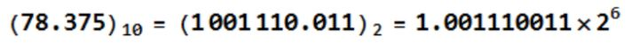

要想理解 float 和 double 的取值范围和计算精度，必须先了解小数是如何在计算机中存储的：
举个例子：78.375，是一个正小数。要在计算机中存储这个数，需要把它表示为浮点数的格式，先执行二进制转换：
PS:二进制的小数点和十进制的小数点是不同的。二进制小数点后是2的负幂，十进制是10的负幂。
一 小数的二进制转换(浮点数)
78.375 的整数部分：

小数部分：

所以，78.375 的二进制形式就是 1001110.011
然后，使用二进制科学记数法，有

注意，转换后用二进制科学记数法表示的这个数，有底有指数有小数部分，这个就叫做浮点数
二 浮点数在计算机中的存储
在计算机中，保存这个数使用的是浮点表示法，分为三大部分：
第一部分用来存储符号位（sign），用来区分正负，这里是 0，表示正数
第二部分用来存储指数（exponent），这里的指数是十进制的 6
第三部分用来存储小数（fraction），这里的小数部分是 001110011
需要注意的是，指数也有正负之分，后面再讲。如下图所示：

比如float类型是32位，是单精度浮点表示法：
符号位（sign）占用1位，用来表示正负数。
指数位（exponent）占用 8 位，用来表示指数。
小数位（fraction）占用 23 位，用来表示小数，不足位数补 0。
而 double 类型是 64 位，是双精度浮点表示法：
符号位占用 1 位，指数位占用 11 位，小数位占用 52 位。
到这里其实已经可以隐隐看出：
指数位决定了大小范围，因为指数位能表示的数越大则能表示的数越大嘛！
而小数位决定了计算精度，因为小数位能表示的数越大，则能计算的精度越大咯！
可能还不够明白，举例子吧：
float 的小数位只有 23 位，即二进制的 23 位，能表示的最大的十进制数为 2 的 23 次方，即 8388608，即十进制的 7 位，严格点，精度只能百分百保证十进制的 6 位运算。
double 的小数位有 52 位，对应十进制最大值为 4 503 599 627 370 496，这个数有 16 位，所以计算精度只能百分百保证十进制的 15 位运算。
PS: 我们常见的科学计算器，比如高中时候用的，一般最大支持的运算位数就是 15 位，超过这个就不够准了。在实际编程中，也是用的 double 类型比较多，因为能够保证 15 位的运算。如果还需要更高精度的运算，则需要使用其他数据类型，比如 java 中的 BigDecimal 类型，能够支持更高精度的运算。
三 指数位的偏移量与无符号表示
需要注意的是指数可能是负数，也有可能是正数，即指数是有符号整数，而有符号整数的计算是比无符号整数麻烦的。所以为了减少不必要的麻烦，在实际存储指数的时候，需要把指数转换成无符号整数。那么怎么转换呢？
注意到 float 的指数部分是 8 位，则指数的取值范围是 -126 到 +127，为了消除负数带来的实际计算上的影响（比如比较大小，加减法等），可以在实际存储的时候，给指数做一个简单的映射，加上一个偏移量，比如float的指数偏移量为 127，这样就不会有负数出现了。
比如：
指数如果是 6，则实际存储的是 6+127=133，即把 133 转换为二进制之后再存储。
指数如果是 -3，则实际存储的是 -3+127=124，即把 124 转换为二进制之后再存储。
当我们需要计算实际代表的十进制数的时候，再把指数减去偏移量即可。
对应的 double 类型，存储的时候指数偏移量是 1023。
四 最后
所以用float类型来保存十进制小数78.375的话，需要先转换成浮点数，得到符号位和指数和小数部分。这个例子前面已经分析过，所以：
符号位是0，指数位是6+127=133，二进制表示为10 000 101，小数部分是001110011，不足部分请自动补0。
连起来用 float 表示，加粗部分是指数位，最左边是符号位 0，代表正数：
0 10000101 001110011 00000 00000 0000
如果用 double 来保存。。。自己计算吧，太多 0 了。
作者：Boss呱呱
链接：https://www.zhihu.com/question/46432979/answer/221485161